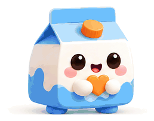
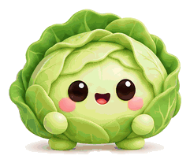
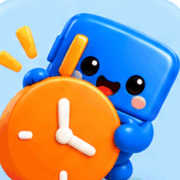
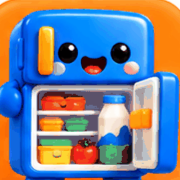
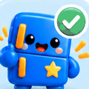
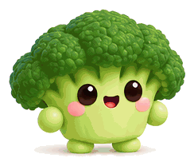
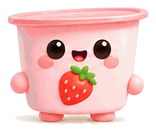
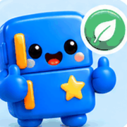

เลือกสีพื้นหลัง
เลือกสีแถบเมนู
9:41
{{ todayLabel }}
วันนี้มีอะไร ในตู้เย็นบ้าง?
{{ bubbleText }}



ควรใช้ก่อน!
มี {{ urgentCount }} อย่างที่ใกล้หมดหรือเลยกำหนดแล้ว
ในตู้เย็นของฉัน
มีของอยู่ {{ totalCount }} อย่าง ใช้ให้ทันนะ


ไม่มีรายการในหมวดนี้
น้องตู้ดูแลทุกอย่างเรียบร้อยดี
{{ it.name }}{{ it.qty }}
{{ it.left }}
วันนี้ทำอะไรกินดี?
เรียงจากเมนูที่ช่วยใช้ของใกล้หมดได้มากที่สุด
{{ r.how }}
ใช้วัตถุดิบคุ้มแค่ไหน
{{ pct }}%ใช้ทัน
ใช้ทัน{{ used }}
ต้องทิ้ง{{ wasted }}
ใช้ทันสัปดาห์นี้{{ used }}

ต้องทิ้ง{{ wasted }}

{{ statsTitle }}
ใช้ของใกล้หมดก่อน ช่วยลดของเหลือทิ้ง วันที่คำนวณเป็นค่าประมาณ ให้ยึดฉลากเป็นหลัก

เพิ่มวัตถุดิบ
แตะเลือกเพื่อน แล้วน้องตู้จะช่วยจำวันให้
จำนวน
{{ draft.qty }} {{ draft.unit }}
เก็บได้
{{ draft.days }} วัน
เก็บที่
ควรใช้ภายใน
{{ draftExp }}
{{ draft.tip }}
{{ toast.text }}